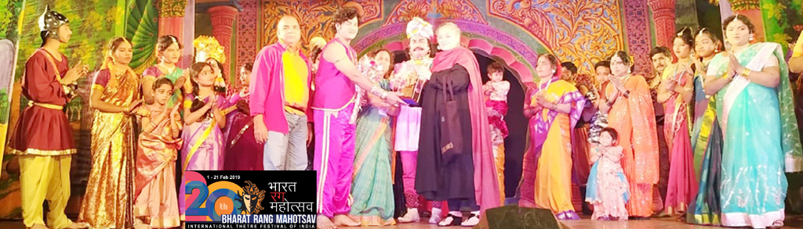
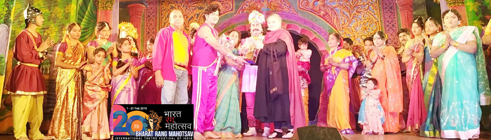

SRI VENKATESHWARA SURABHI THEATRE ®
Surabhi Estd. 1885
-SURABHI JAYACHANDRA VARMA GROUP +91 9014726409
+91 9014726409
+91 9014726409
+91 9014726409


 

Surabhi
is a rare institution of family groups
that leads nomadic life by performing dramas in villages. Surabhi has a track record of
135years. Most of the Surabhi plays are the compendiums from the Indian epics and
mythiologies Ramayana, Mahabharatha and Bhagavatha . There was a time that Surabhi troupes
could tremendously survived all over Andhra Pradesh.
Sri Venkateswara surabhi theatre
which is well known as the Surabhi Jayachandra Varma troupe
is
one of the survived groups to till date.
Read more about Surabhi »
Sri Venkateswara Surabhi Theatre
is an institution of family theatre
with morethan 60 family members. It is
famous for its Padya Natakam (The classical Telugu verse play) performances adorned with
colorful illusionary backgrounds, sets and trick scenes. The interesting thing about this
troupe is that all artists/technicians of this troupe are from one family, dedicated their
lives to Rangastal (Rangmanch/Stage). There are no age limitations or retirements for the
artists of this family.
The troup Surabhi theatre is a small world by it self. With in-built democratic principles and
administration. The families of artists live on the other side of the theatre structure in
small apartments built for them. Women and children have always been integral part of its
productions. There is a seperate workshop to produce sets and other necessary objects. The
artists do moulding, curtain painting, cut-out designs, and other works by themselves.
Surabhi takes resource to a lot of gimmicks, recreating old worl charm on stage. The
audience witness to their delight, Lord Vishnu materialising on the stage to bless a devotee
and Narada traversing through the air, rendering 'Narayana Keertana.' Gatotkacha pours fire
in stage and Krishna dances on Kaliya, the five headed sanke.
Children, as they watch their elders' performance, learn themselves and they are ready to
play the role anytime. Almost all artists are technicians too. Women not only play female
and male roles too. It would excite the audience that the audience can watch different age
groups of artists in the same play that the babies, children, youth, middle aged and old,
are all from one family. There are different roles regarding the drama such as making the
stage, curtains, stitching, painting, making of the wigs, ornaments, designing costumes,
electrical works, lighting works, etc., All these roles are performed by the family.
Sri Venkateswara Surabhi theatre is performing at several National and International
theatre festivals.
The principle of success of the exiting plays is the team work. Audience could see only two
artists performing on the stage; but behind the screens, there would be the whole family
thats working out to make the instant set on the next scene.